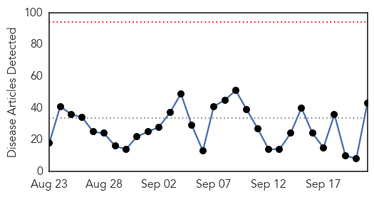
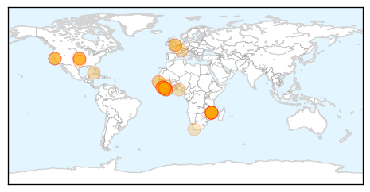
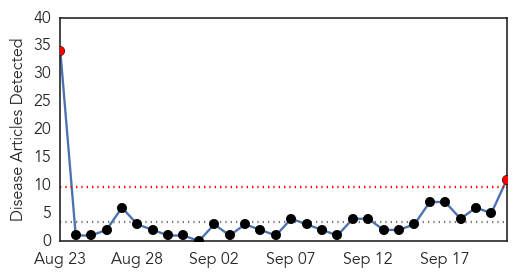
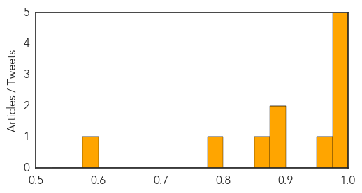

Ebola
30-Day Web Trend
0 alerts, 0 warnings

30-Day Twitter Trend
0 alerts, 0 warnings
Article Locations
Article Confidences

Top Articles:
- 0.998
- UK Pledges $202 Million to Help Affected African Countries
- 0.996
- AP Investigation: Bungling by UN agency hurt Ebola response
- 0.995
- AP Investigation: Bungling by UN agency hurt Ebola response
- 0.995
- AP Investigation: Bungling by UN agency hurt Ebola response
- 0.994
- Enhanced Airport Entry Screening to End for Travelers from Liberia to the United States
- 0.993
- AP Investigation: Bungling by UN agency hurt Ebola response
- 0.993
- AP Investigation: WHO Ebola effort faltered in African city
- 0.992
- AP Investigation: Bungling by UN agency hurt Ebola response
- 0.992
- AP Investigation: Bungling by UN agency hurt Ebola response
- 0.990
- Enhanced airport screening to end for travelers from Liberia to U.S.
- 0.990
- Mishandling by WHO hurt Ebola response: AP
- 0.989
- AP Investigation: WHO Ebola effort faltered in African city
- 0.989
- AP Investigation: Bungling by UN agency hurt Ebola response
- 0.989
- The Courier AP Investigation: Bungling by UN agency hurt Ebola response
- 0.988
- AP Investigation: WHO Ebola effort faltered in African city - MyNorthwest
- 0.988
- AP Investigation: WHO Ebola effort faltered in African city - MyNorthwest
- 0.987
- Bungling by UN agency hurt Ebola response
- 0.986
- Bungling by UN agency hurt Ebola response
- 0.983
- AP Investigation: Bungling by U.N. agency hurt Ebola response
- 0.981
- AP Investigation: Bungling by WHO Hurt Ebola Response
- 0.980
- Bungling by UN agency hurt Ebola response
- 0.979
- Virus
- 0.977
- 10 critical mistakes in last year's Ebola outbreak
- 0.970
- Bungling by UN agency hurt Ebola response: AP Investigation
- 0.969
- Bungling by UN agency hurt Ebola response
- 0.967
- 10 critical mistakes in last year's Ebola outbreak
- 0.963
- AP Investigation: Bungling by UN agency hurt Ebola response
- 0.963
- Ebola outbreak mistakes
- 0.962
- Bungling by UN agency hurt Ebola response
- 0.960
- AP Investigation: Bungling by UN agency hurt Ebola response
- 0.959
- AP Investigation: World Health agency's bungling hindered Ebola response in Sierra Leone
- 0.958
- AP Investigation: Bungling by UN agency hurt Ebola response
- 0.958
- AP Investigation: Bungling by UN agency hurt Ebola response
- 0.954
- Bungling by World Health Organization Hurt Ebola Response, AP Investigation Reveals
- 0.890
- Ebola screening for Nigeria's Mecca pilgrims
- 0.836
- AP Investigation: WHO’s bungling hurt Ebola response in Sierra
- 0.814
- Health Promotion directorate sensitises 40 district chiefs on Ebola
- 0.723
- Health is key to growth
- 0.720
- World Health agency's bungling hindered Ebola response in Sierra Leone
- 0.718
- GW Launches Health Workforce Research and Policy Institute
- 0.717
- Today’s NewsStand (September 21, 2015)
- 0.676
- World Bank Hails Sierra Leone’s Ebola Fight
- 0.641
- Orphans’ Future in Limbo
Top Tweets:
- 0.957
- 10 critical mistakes in 2014's Ebola outbreak - Al-Arabiya http://t.co/L7yi4ZmBVe ebola EVD
- 0.941
- How bureaucracy, bungling hurt Ebola response - CBS News http://t.co/jhpOv6wiA0 ebola EVD
- 0.906
- Guinea's Government Expects an End to Ebola Epidemic by November - Bloomberg http://t.co/Slz1aNfHhO ebola EVD
- 0.890
- 10 critical mistakes in last year's Ebola outbreak - Washington Post http://t.co/KmfTkfcdk9 ebola EVD
- 0.822
- AP Investigation: World Health agency's bungling hindered Ebola response in ... - http://t.co/rccNXXXwST http://t.co/Woc9e3ELHC ebola EVD
- 0.755
- 10 critical mistakes in last year's Ebola outbreak - http://t.co/tAKwvPrheZ http://t.co/Ri7aHSzODz ebola EVD
- 0.732
- Vaccine maker fighting Ebola gets $24M government grant - Philadelphia Business Journal (blog) http://t.co/r5bNmgVsB2 ebola EVD
- 0.715
- AP: Missteps at WHO Fueled Ebola's Spread Add to ... - The Globe and Mail http://t.co/2BAPBe7AY5 ebola EVD
- 0.693
- New Ebola infection in former Sierra Leone hotspot sparks a rapid interagency response to stop further transmission http://t.co/DwT7BlPdaZ
- 0.676
- 21 Sept - news pouch on avianflu avianinfluenza Ebola EbolaResponse MERS is here: http://t.co/RFf1bC0rml
- 0.669
- Regeneron Enters Agreement with BARDA on Antibody Therapy for Ebola - Genetic Engineering & Biotec... http://t.co/Qxlx7sbzXZ ebola EVD
- 0.578
- Inovio Pharma (INO) Receives $24M DARPA Award for Further Ebola Treatment ... - http://t.co/yZ9OKhy7nN http://t.co/nL8gepHPKC ebola EVD
- 0.501
- Guinea's Government Expects an End to Ebola Epidemic by November http://t.co/mwkCSmKzEc
Cholera
30-Day Web Trend
2 alerts, 0 warnings

30-Day Twitter Trend
0 alerts, 0 warnings

Article Locations

Article Confidences
Top Articles:
- 0.999
- Ministry of Health, WHO and partners step up response to cholera outbreak in Iraq
- 0.996
- Iraq Is Now Fighting a Cholera Outbreak in Addition to the Islamic State
- 0.983
- Health facilities alerted to the dangers of cholera - Kuwait Times
- 0.978
- Iraqi authorities on alert to face cholera outbreak after 4 deaths - Xinhua
- 0.977
- Fresh cholera outbreak plagues Baghdad
- 0.966
- Iraq Takes Steps To Stem Cholera Outbreak In Abu Ghraib
- 0.895
- Just what Iraq needs: A cholera outbreak
- 0.883
- Iraq Facing Cholera Outbreak as Public Services Deteriorate
- 0.861
- #Iraq moves to tackle deadly cholera outbreak
- 0.781
- Zimbabwe’s Hardest Hit District Fights Back
- 0.587
- News in Brief 21 September 2015 (AM)
Top Tweets:
-
No tweets found for Sep 21, 2015